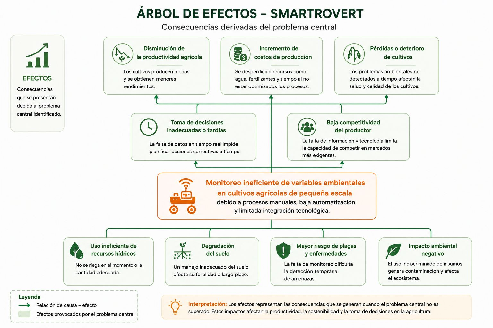

Paso 2. Análisis del problema
Definición del problema central
El análisis del problema constituye el segundo paso dentro de la metodología de marco lógico. Este proceso permite identificar de manera estructurada la situación principal que afecta el contexto agrícola abordado por el proyecto SmartRovert, así como las causas que la originan y los efectos que genera sobre la productividad y el monitoreo de cultivos.
En este proyecto, el problema no se limita únicamente a la falta de tecnología en el sector agrícola, sino a las dificultades existentes para realizar un monitoreo eficiente de variables ambientales en cultivos de pequeña escala.
Actualmente muchos agricultores continúan realizando procesos manuales para supervisar humedad, temperatura, iluminación y condiciones del suelo, lo que dificulta la detección temprana de problemas y limita la toma de decisiones oportunas.
Problema central
Existe un monitoreo ineficiente de variables ambientales en cultivos agrícolas de pequeña escala debido a procesos manuales, baja automatización y limitada integración tecnológica.
Esta formulación se presenta en estado negativo, centrada en un único problema principal, permitiendo posteriormente desarrollar el análisis de causas, efectos y alternativas de solución dentro del marco lógico del proyecto.
Árbol de problemas | Relación entre causas, problema central y efectos
El árbol de problemas permite representar gráficamente la relación entre las causas que originan el problema principal y los efectos que este genera dentro del contexto agrícola.
En el caso del proyecto SmartRovert, el análisis se centra en las dificultades asociadas al monitoreo agrícola tradicional y la limitada incorporación de tecnologías inteligentes en cultivos de pequeña escala.
Desliza horizontalmente para ver la imagen completa

Fuente: Elaboración propia.
Árbol de problemas | Árbol de efectos | Consecuencias derivadas del problema
El árbol de efectos permite identificar las principales consecuencias derivadas del problema central identificado.
En este proyecto, los efectos se relacionan con pérdidas de productividad, desperdicio de recursos, baja eficiencia agrícola y dificultades para la toma de decisiones.
Desliza horizontalmente para ver la imagen completa

Fuente: Elaboración propia.
| Nivel | Efectos identificados | Relación causal |
|---|---|---|
| Efecto directo | Baja eficiencia agrícola. | Se deriva del monitoreo manual y la limitada automatización. |
| Efecto superior | Disminución de productividad. | Consecuencia de la baja eficiencia en el monitoreo del cultivo. |
| Efecto directo | Pérdida de recursos agrícolas. | Relacionado con el uso ineficiente de agua y fertilizantes. |
| Efecto superior | Incremento de costos operativos. | Consecuencia del desperdicio de recursos en el cultivo. |
| Efecto directo | Dificultad para tomar decisiones. | Se produce por falta de datos en tiempo real. |
Árbol de problemas | Árbol de causas | Factores asociados al problema
El árbol de causas permite identificar los factores que originan el problema central dentro del contexto agrícola.
En el proyecto SmartRovert, las causas están relacionadas con la baja automatización agrícola, el monitoreo manual, la limitada integración IoT y las dificultades tecnológicas presentes en cultivos de pequeña escala.
Desliza horizontalmente para ver la imagen completa

Fuente: Elaboración propia.
| Nivel | Causas identificadas | Relación causal |
|---|---|---|
| Causa directa | Monitoreo manual de cultivos. | Limita la supervisión constante de variables ambientales. |
| Causa indirecta | Escasa automatización agrícola. | Reduce la eficiencia del monitoreo. |
| Causa directa | Baja integración tecnológica. | Dificulta la recolección automática de datos. |
| Causa indirecta | Limitaciones económicas y tecnológicas. | Restringen la implementación de soluciones inteligentes. |
| Causa directa | Escasa implementación IoT. | Impide el monitoreo remoto y en tiempo real. |
Análisis del problema
El análisis del problema permitió identificar que el monitoreo ineficiente de variables ambientales representa una de las principales dificultades presentes en cultivos agrícolas de pequeña escala.
El árbol de efectos evidencia que esta situación genera consecuencias importantes como pérdida de recursos, disminución de productividad y dificultades para la toma de decisiones.
Por su parte, el árbol de causas muestra que el problema se relaciona con la baja automatización agrícola, el monitoreo manual y la limitada incorporación de tecnologías IoT y visión artificial.
A partir de este análisis, el proyecto SmartRovert plantea una propuesta tecnológica orientada a optimizar el monitoreo agrícola mediante sensores inteligentes, automatización y análisis de datos en tiempo real.

{kind=link}
{kind=link}
{kind=link}
{kind=link}